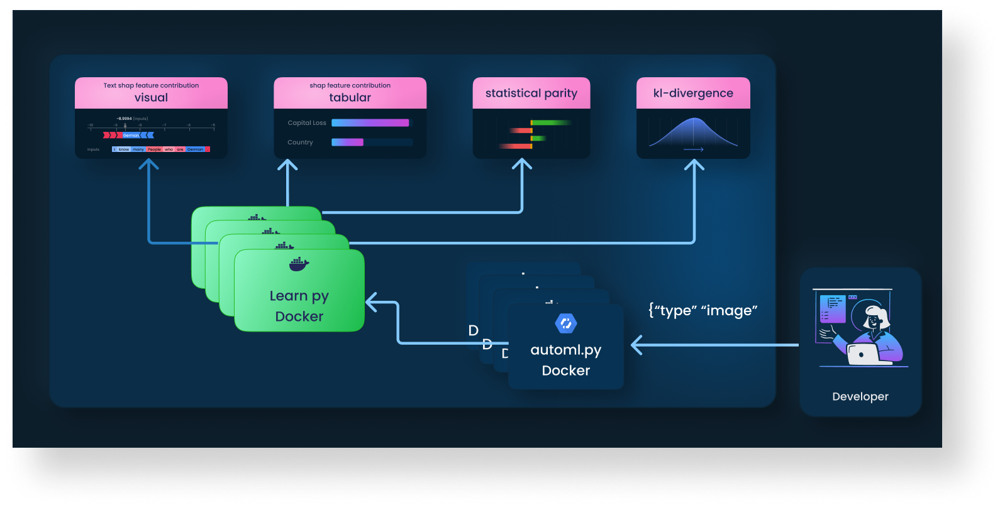

1. Overview
The Virtuous ModelOps Heirarchy
Many functions to one model. One scalable pod controlled by kubernets. But permissions are required to access a pipeline, which not even VirtuousAI employees will have access to.
AutoML.py

Calling the Endpoint
Call the API like the following.
import requests, json
# Define the hyperparameters space
with open("payload.json", "r+") as f:
space = json.loads()
# Send a POST request to the automl Flask application
response = requests.post('http://api.virtuousai.com:5000/v1/automl', json=space)
# Print the response
print(response.json())
The Endpoints
Below are the category of API calls to interact with the AUTOML (our legacy model) suite.
| Instance | Description | Additional Information |
|---|---|---|
| hyperopt.call_hyperopt | The controller for AUTOML. Calls multiple learn instances given the params. | First, you call the hyperopt endpoint to create multiple models using the learn endpoint. Hyperopt does the job scheduling. To be replaced by Tensorflow and Katib most likely. |
| learn.call_learn | The training/fit instance. It produces the trained model that is used. | Each hyperopt job schedules multiple other learn jobs wherever resources provide. |
| predict.call_predict | The classification/prediction instance. It is accessible after training has been performed. | After "learning" is finished, a single model instance is preserved and the rest are killed and data deleted. The remaining instances are now live and callable for prediction. |
| explain.call_explain | The explain instance. It is accessible after training has been performed. In summary, it is feature importance, contribution, that the specific model provides. | In addition to prediction, you can also perform explanation for predictions to justify results. These vary based on model type. See your applicable product type to see the methods available. But they may include the following: feature contribution, feature importance, data drift, bias. |
(See the next section for an introduction)